| Parameters | ||
| move forward: | 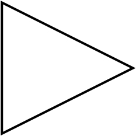 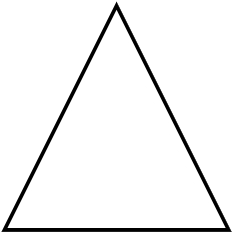 | |
| bump: | 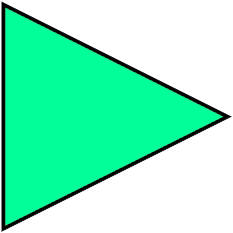
|
|
| turn: | 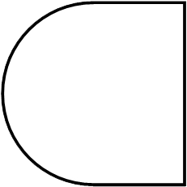 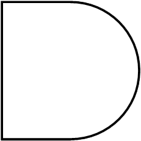 | |
| feel empty: | 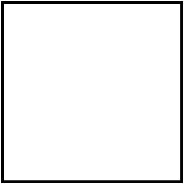 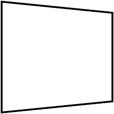 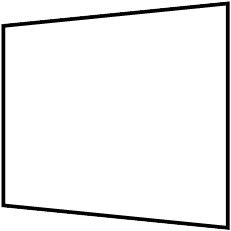 | |
| feel the wall: | 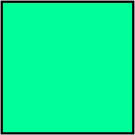 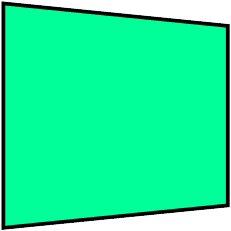 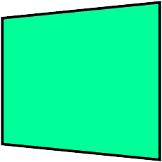 | |
| time interval: | ms | |
| actionType: | ||
| Total Valence: | ||
| loop num: | ||
|
||||||||||||||||||||||||||||||||
|
Composite Interaction
Intended Interaction Enacted Interaction Interaction Step Number Valence |